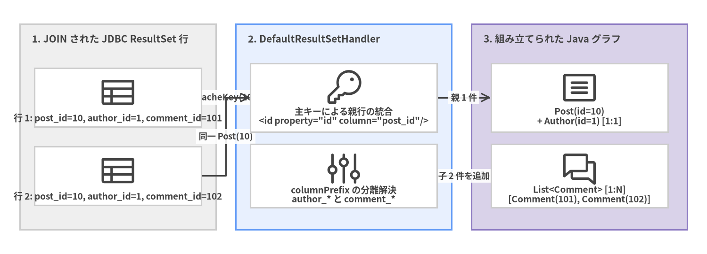
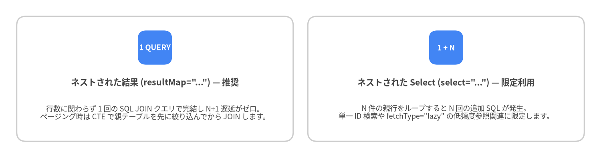

4. ResultMap・Java Record・関連マッピング
<resultMap> 要素は MyBatis で最も強力な機能です。フラットなリレーショナル ResultSet の行データを、イミュータブルな Java record、1:1 の <association> 参照、1:N の <collection> リスト、ポリモーフィックな <discriminator> 階層を含むリッチな Java オブジェクトグラフへと、rs.getString(...) のようなボイラープレートを 1 行も書かずに変換します。
自動マッピングとイミュータブル Java record 対応
単一エンティティや DTO を返すクエリでは、明示的な <resultMap> を書く必要すらありません。mapUnderscoreToCamelCase="true" と argNameBasedConstructorAutoMapping="true" を有効にすれば、DefaultResultSetHandler が SQL のカラムラベルを Java record の標準コンストラクタ引数名または POJO の setter プロパティへ自動的にマッピングします。
// イミュータブルな Java 17+ Record
public record PostSummary(
Long id,
String title,
String authorUsername,
LocalDateTime publishedAt) {}
<!-- id -> id, title -> title, author_username -> authorUsername, published_at -> publishedAt を自動マッピング -->
<select id="findRecentSummaries" resultType="com.example.blog.domain.PostSummary">
SELECT
p.id,
p.title,
a.username AS author_username,
p.published_at
FROM posts p
JOIN authors a ON a.id = p.author_id
ORDER BY p.published_at DESC
LIMIT #{limit}
</select>
明示的な <constructor> マッピング
クラスに複数のコンストラクタがある場合や、イミュータブルオブジェクトに対して型・カラムを明示的に制御したい場合は、<resultMap> 内で <constructor> を使用します。
<resultMap id="authorRecordMap" type="com.example.blog.domain.Author">
<constructor>
<idArg column="author_id" javaType="java.lang.Long" name="id"/>
<arg column="username" javaType="String" name="username"/>
<arg column="email" javaType="String" name="email"/>
<arg column="created_at" javaType="java.time.LocalDateTime" name="createdAt"/>
</constructor>
</resultMap>
[!TIP] 主キーカラムには必ず
<idArg>(<constructor>内) または<id>(プロパティマッピング内) を指定してください。MyBatis は1:Nの<collection>JOIN マッピングで親オブジェクトの重複排除を行う際、<id>/<idArg>カラムを使って行の識別キー (CacheKey) を高速に計算します。
<association> (1:1) と <collection> (1:N) のマッピング
関連エンティティを読み込むには 2 つの方式があります。
- ネストされた結果 (
resultMap="..."/ JOIN マッピング): 単一の SQLLEFT JOINクエリを実行し、メモリ上で結合行を親子のオブジェクトグラフに折りたたみます。 - ネストされた Select (
select="..."): 関連オブジェクト取得用の別 SQL クエリを実行します (fetchType="lazy"による遅延ロードと併用されることが多い方式)。

Source Code
from drawlib.canvas import save, setup
from drawlib.diagrams.architecture import ArchitectureDiagram, Node, NodeGroup, PhosphorIcon
from drawlib.styles import Colors, Styles
setup(width=144, height=52, dpi=150)
d = ArchitectureDiagram(
node_style=Styles.Dark,
node_text_style=Styles.DarkBold.patch(text_size=9.2),
edge_style=Styles.Dark.patch(line_width=1.5),
edge_text_style=Styles.DarkBold.patch(text_size=8.8),
node_card_style=Styles.Neutral.patch(shape_fill_color=Colors.White),
)
rs = d.add(
NodeGroup(
"1. JOIN された JDBC ResultSet 行",
width=40,
height=42,
style=Styles.Neutral,
text_style=Styles.DarkBold.patch(text_size=10.0, halign="left", valign="top"),
),
xy=(4, 5),
)
n_r1 = rs.add(Node("行 1: post_id=10, author_id=1, comment_id=101", icon=PhosphorIcon.TABLE, width=34, height=12), xy=(20, 27))
n_r2 = rs.add(Node("行 2: post_id=10, author_id=1, comment_id=102", icon=PhosphorIcon.TABLE, width=34, height=12), xy=(20, 11))
eng = d.add(
NodeGroup(
"2. DefaultResultSetHandler",
width=44,
height=42,
style=Styles.PrimaryNeutral,
text_style=Styles.DarkBold.patch(text_size=10.0, halign="left", valign="top"),
),
xy=(48, 5),
)
n_id = eng.add(Node("主キーによる親行の統合\n<id property=\"id\" column=\"post_id\"/>", icon=PhosphorIcon.KEY, width=38, height=14), xy=(22, 27))
n_prefix = eng.add(Node("columnPrefix の分離解決\nauthor_* と comment_*", icon=PhosphorIcon.SLIDERS, width=38, height=13), xy=(22, 11))
obj = d.add(
NodeGroup(
"3. 組み立てられた Java グラフ",
width=44,
height=42,
style=Styles.SecondaryNeutral,
text_style=Styles.DarkBold.patch(text_size=10.0, halign="left", valign="top"),
),
xy=(96, 5),
)
n_post = obj.add(Node("Post(id=10)\n+ Author(id=1) [1:1]", icon=PhosphorIcon.ARTICLE, width=36, height=14), xy=(22, 27))
n_comm = obj.add(Node("List<Comment> [1:N]\n[Comment(101), Comment(102)]", icon=PhosphorIcon.CHATS, width=36, height=13), xy=(22, 11))
n_r1.connect(n_id, label="CacheKey(10)")
n_r2.connect(n_id, label="同一 Post(10)")
n_id.connect(n_post, label="親 1 件")
n_prefix.connect(n_comm, label="子 2 件を追加")
d.draw(xy=(0, 0))
save()
columnPrefix を活用した 1:1 + 1:N ネスト JOIN の完全な実装例
columnPrefix を使うと、子エンティティの <resultMap> 定義を複数のクエリ間でクリーンに再利用できます。
<resultMap id="authorMap" type="Author">
<id property="id" column="id"/>
<result property="username" column="username"/>
<result property="email" column="email"/>
</resultMap>
<resultMap id="commentMap" type="Comment">
<id property="id" column="id"/>
<result property="body" column="body"/>
<result property="createdAt" column="created_at"/>
</resultMap>
<resultMap id="detailedPostMap" type="Post">
<id property="id" column="post_id"/>
<result property="title" column="post_title"/>
<result property="content" column="post_content"/>
<!-- columnPrefix="author_" を使った 1:1 Association -->
<association property="author"
resultMap="authorMap"
columnPrefix="author_"/>
<!-- columnPrefix="comment_" を使った 1:N Collection -->
<collection property="comments"
ofType="Comment"
resultMap="commentMap"
columnPrefix="comment_"/>
</resultMap>
<select id="findDetailedPostById" resultMap="detailedPostMap">
SELECT
p.id AS post_id,
p.title AS post_title,
p.content AS post_content,
a.id AS author_id,
a.username AS author_username,
a.email AS author_email,
c.id AS comment_id,
c.body AS comment_body,
c.created_at AS comment_created_at
FROM posts p
INNER JOIN authors a ON a.id = p.author_id
LEFT JOIN comments c ON c.post_id = p.id
WHERE p.id = #{id}
ORDER BY c.id ASC
</select>
N+1 クエリ問題の回避パターン
$N$ 件の親行を返す一覧クエリで <association select="..."> や <collection select="..."> を使用すると、親一覧取得の 1 回に加えて子クエリが $N$ 回発行され (1 + N 回の DB ラウンドトリップ)、深刻なレイテンシ低下を引き起こします。

Source Code
from drawlib.canvas import save, setup
from drawlib.smartarts import CardList
from drawlib.styles import Colors, Styles
setup(width=144, height=38, dpi=150)
cards = CardList(
style=Styles.Neutral.patch(shape_fill_color=Colors.White),
text_style=Styles.DarkBold.patch(text_size=10.2),
description_style=Styles.Dark.patch(text_size=8.8),
badge_shape="rounded_rect",
badge_style=Styles.PrimaryFlat,
badge_text_style=Styles.WhiteBold.patch(text_size=9.0),
direction="horizontal",
spacing=3.5,
)
cards.add(
'ネストされた結果 (resultMap="...") — 推奨',
"行数に関わらず 1 回の SQL JOIN クエリで完結し N+1 遅延がゼロ。\nページング時は CTE で親テーブルを先に絞り込んでから JOIN します。",
badge_text="1 QUERY",
)
cards.add(
'ネストされた Select (select="...") — 限定利用',
"N 件の親行をループすると N 回の追加 SQL が発生。\n単一 ID 検索や fetchType=\"lazy\" の低頻度参照関連に限定します。",
badge_text="1 + N",
)
cards.draw((4.0, 4.0), width=136.0, height=30.0, align="bottom_left")
save()
1:N <collection> JOIN と安全なページネーション (CTE パターン)
1:N の子テーブルを LEFT JOIN するクエリ全体に直接 LIMIT 20 OFFSET 0 をかけると、結合後の行数 が 20 行で打ち切られ、子要素のリストが途中で欠落します。以下のように CTE (共通テーブル式) またはサブクエリで 先に親テーブルの 20 件を絞り込んでから 子テーブルを LEFT JOIN するのが定石です。
<select id="findPaginatedPostsWithComments" resultMap="detailedPostMap">
WITH paged_posts AS (
SELECT id, author_id, title, content
FROM posts
ORDER BY published_at DESC
LIMIT #{limit} OFFSET #{offset}
)
SELECT
p.id AS post_id,
p.title AS post_title,
p.content AS post_content,
a.id AS author_id,
a.username AS author_username,
a.email AS author_email,
c.id AS comment_id,
c.body AS comment_body,
c.created_at AS comment_created_at
FROM paged_posts p
INNER JOIN authors a ON a.id = p.author_id
LEFT JOIN comments c ON c.post_id = p.id
ORDER BY p.post_id DESC, c.id ASC
</select>